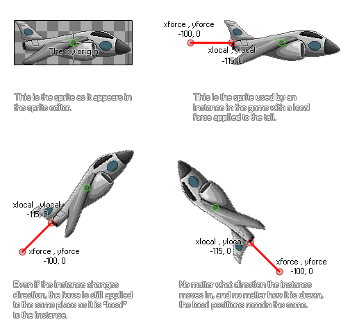

physics_apply_local_force(xlocal, ylocal, xforce, yforce)
| Argumento | Descripción |
|---|---|
| xlocal | La coordenada x relativa al origen donde se aplicará la fuerza |
| ylocal | La coordenada y relativa al origen donde se aplicará la fuerza |
| xforce | el componente x del vector de fuerza |
| yforce | el componente y del vector de fuerza |
Devoluciones: N / A
Otra forma de usar la fuerza en el mundo de la física es aplicarla localmente a una instancia. Lo que esto significa es que la fuerza y la dirección de la fuerza se calculan en función del origen (o la posición si no tiene sprite) de la instancia, sin tomar en consideración la dirección o rotación que pueda tener en la sala de juegos o el mundo de la física.. Se debe tener en cuenta que con esta función, las fuerzas no se aplican al centro de masa del objeto, sino más bien en un punto relativo a la instancia y no se aplicarán instantáneamente ya que dependen de otras fuerzas que estén trabajando en él. el objeto (como la gravedad). Esta ilustración muestra cómo funciona una fuerza local:

Como puede ver, las coordenadas xlocal y local se calculan sobre la base de que la posición del eje se considera siempre como el origen de la instancia (0,0), por lo que no importa en qué lugar de la sala se encuentre el objeto, xlocal y ylocal siempre van a ser el mismo. Luego debe decidir dónde se deben colocar los componentes vectoriales de la fuerza (xforce y yforce) en relación con la posición xlocal / ylocal. La fuerza exacta está definida por el vector que obtenemos de los componentes xforce / yforce en relación con esas coordenadas, lo que simplemente significa que la fuerza se calcula como la distancia de xlocal / ylocal a xforce / yforce en Newtons, y la dirección es el ángulo que obtenemos de xlocal / ylocal a xforce / yforce. Esto puede parecer un poco confuso, pero solo tienes que mirar la ilustración para ver cómo funciona esto y te ahorra algunas matemáticas complicadas.
NOTA: El mundo de la física utiliza los contadores para todos sus cálculos, y la proporción de píxeles por metro se define en el editor de la sala o usando physics_world_create.
if keyboard_check(vk_right)
{
physics_apply_local_force(-25, 0, -50, 0);
}
El código anterior aplicará una fuerza a la instancia de 50 Newtons de izquierda a derecha con respecto al origen mientras se presiona la tecla de la flecha hacia la derecha.